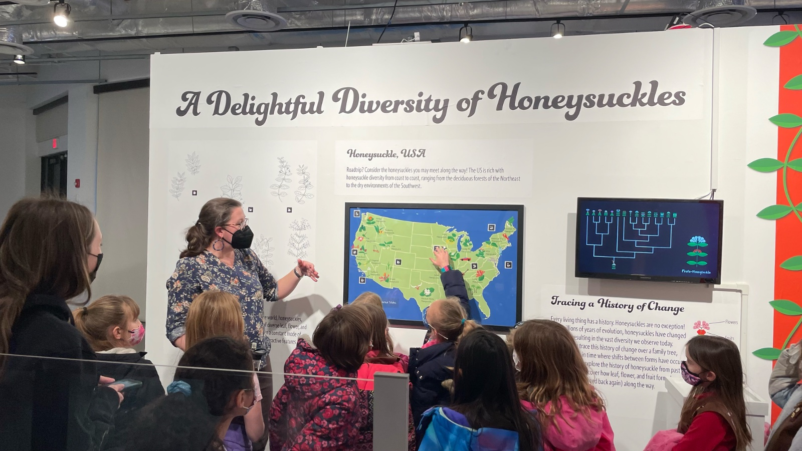
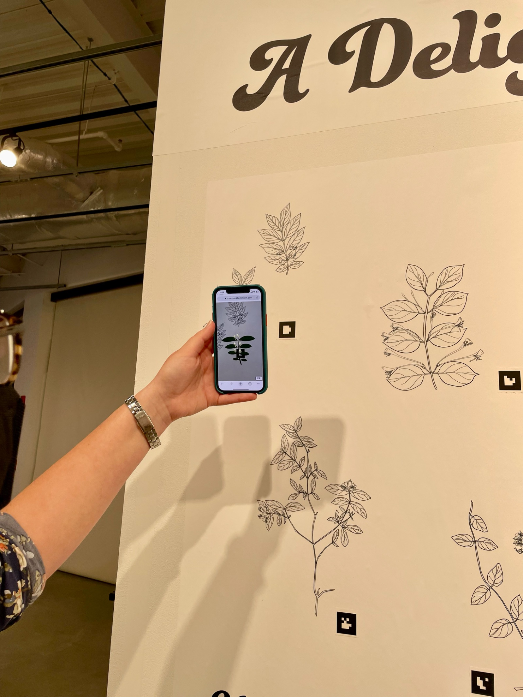
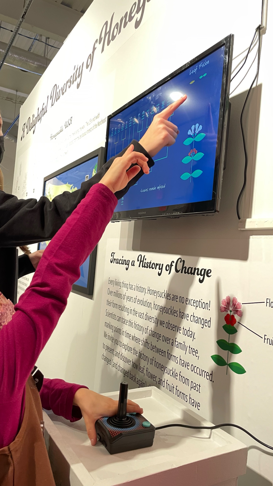
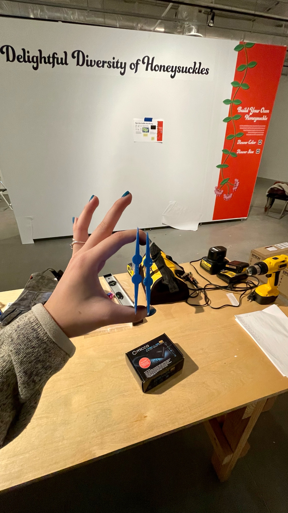
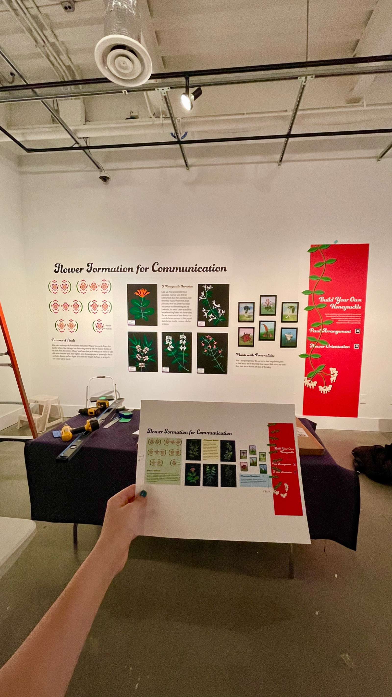

Teaching STEM through light, touch, and play, without overwhelming a soul.
Visitors walk past static signage. The challenge: design an interactive exhibit that teaches molecular biology and the physics of color in a way that's intuitive, hands-on, and accessible, without burying people in information. I worked as Maker Space Technician and UX Designer to turn a traditional gallery into a research-driven, immersive experience, merging AR, kinetic lighting, and touch-based interaction.
I ran the exhibit through a full research loop, grounding every interactive choice in how visitors actually behave in a gallery, then prototyping, testing, and iterating against real confusion.
Observed how visitors engaged with traditional signage and static displays, and interviewed students and community members about what interactivity they actually wanted.
I was staffed for the Sarnoff Museum and the IMM Art Gallery.
Built an AR-guided experience where visitors interact with light installations driven by real scientific data. Tested with small groups, gathering qualitative feedback through interviews and surveys. I also ran ethnographic studies on the Sarnoff Museum exhibits.
Simplified instructions after users struggled with joystick navigation, refined lighting transitions to feel more immersive and responsive, and worked with Biology faculty to keep the science accurate and usable.
For the ethnographic walkthroughs at Sarnoff, I iterated designs alongside the Physics lead and the Museum Director.
Communicate how colors and wavelengths affect perception.
Visitors moved real light beams to create unique chromatic patterns on a live screen.
Reported that the hands-on play made wavelength-to-mood relationships click.
Explain DNA replication through physical space.
Haptic sensors and floor projections guided participants through each stage of replication.
Moving through the process, rather than reading it, made the science stick.
Visualize how the brain processes visual input.
Visitors triggered neural simulations by interacting with color-coded tiles.
Many lingered and asked how to learn more, the goal of any good exhibit.
The honeysuckle exhibit brought the research to life: an AR "Build Your Own Honeysuckle" wall, a joystick that let visitors trace evolution across a phylogenetic tree, botanical art, 3D-printed flower models, and guided tours that filled the gallery.





The interactive approach more than doubled how long visitors engaged, and the feedback loop didn't stop at this gallery, it shaped how the Sarnoff Museum designs exhibits going forward. The work was recognized as a model for interdisciplinary, research-informed gallery experiences.
Ran weekly sprints with student researchers and faculty, keeping the art, science, and tech teams aligned on user-centered goals.
Aligned physical exhibit limitations with UX constraints and ADA accessibility standards so the experience worked for everyone.
Designed and fabricated exhibit elements, including laser-cut acrylic flowers, to make curiosity and clarity tangible.
Beyond the gallery, I helped reopen the David Sarnoff Museum, home to the RCA labs where color television was invented, after it had been closed for two years. Working with physicists and the museum director, I rebuilt the visitor experience around each exhibit's hands-on mechanism: a rotating display of historic industrial lightbulbs, and a pushbutton that fires glowing electrons to show exactly how 1960s televisions produced color.
It's the same principle as the gallery, let people touch the science and the understanding follows. Explore the reopened floor in the interactive 360° below: click and drag to look around.
Translating technical STEM concepts into intuitive design takes deep empathy and a lot of iteration, the first idea is rarely the clear one.
Balancing creative vision with user testing is essential. What's "cool" isn't always usable, and only testing tells you which is which.
Working across art, science, and engineering unlocked solutions none of us would have reached alone.